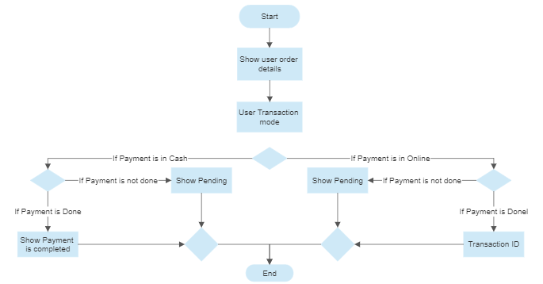
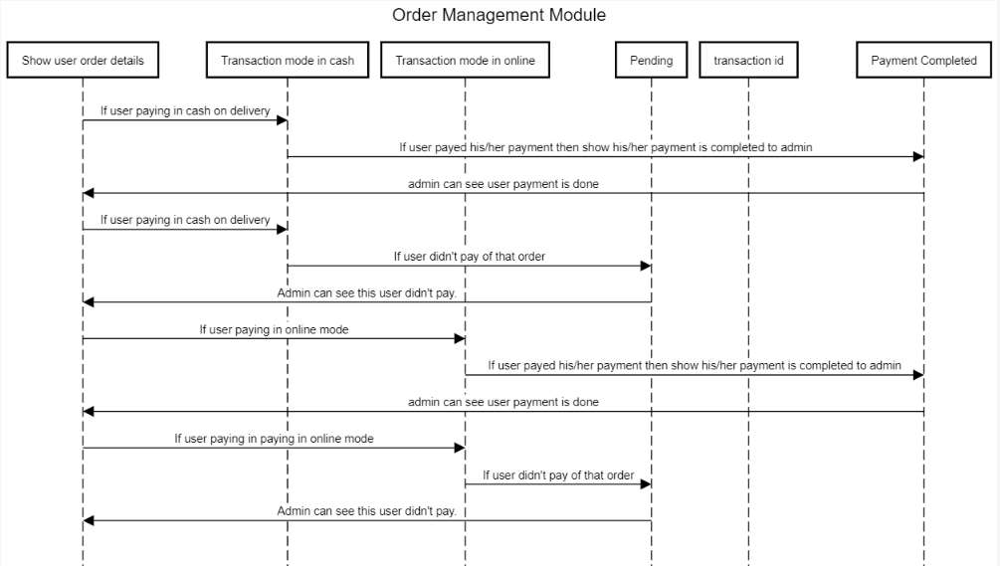

Built with Dhanrajsinh Parmar as an Advance Java (01CT0623) coursework project at Marwadi University, the Order Management Module is a Spring Boot web application that lets users place orders, choose a payment mode, and track everything through to delivery. Users browse a list of items, enter a quantity, and the system calculates the total cost before the order is submitted and stored in the database.
The module supports two transaction modes — cash on delivery and online payment — and tracks each order's payment status separately from its delivery status, so both the customer and an admin can see whether a payment is pending or completed, and whether an order has shipped. Every order also generates a transcript with the order ID, item ID, quantity, and total, and the module includes structured exception handling to catch and log system, runtime, and application-specific errors.
Under the hood, the app follows a layered architecture — a presentation layer for user interaction, a business logic layer for processing orders, and a data access layer talking to a MySQL database via Hibernate — and exposes REST-style endpoints (built and tested with Postman) for adding orders, adding order details, updating COD status, cancelling orders, and marking deliveries complete.
After an order's transaction mode is set, the flow branches on whether payment is cash-on-delivery or online — looping on a pending state until payment is confirmed, then issuing a transaction ID before the order completes.

The sequence diagram traces that same logic across the module's components — from the order details screen through the cash and online transaction paths, the pending state, and on to a completed payment with its transaction ID.
